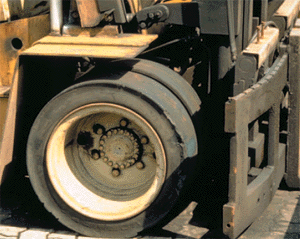
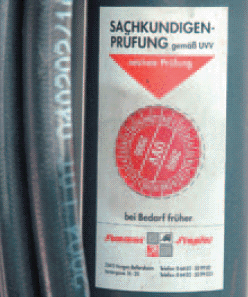

5 Prüfungen von Gabelstaplern
Täglich vor Arbeitsbeginn muss der Fahrer den Gabelstapler durch Sicht- und Funktionsprüfung überprüfen. Erst wenn keine Mängel erkannt werden, darf er den Stapler in Bewegung setzen.
Sichtprüfungen sind bestanden, wenn beispielsweise
- die Gabelzinken und Gabelträger keine erkennbaren Schäden haben, wenn sie nicht verbogen oder stark abgeschliffen sind, keine Risse aufweisen (Bild 5-1),
- die Reifen nicht schadhaft sind und den erforderlichen Luftdruck haben,
- die Pedale griffig sind,
- das Fahrerschutzdach sicher befestigt und ohne erkennbare Schäden ist,
- das Lastschutzgitter (wo erforderlich) vorhanden und sicher befestigt ist
und
- die Hydraulik keine Leckverluste aufweist.
Funktionsprüfungen sind bestanden, wenn beispielsweise
- die Betriebs- und die Feststellbremse funktionieren (das im Stand betätigte Pedal muss nach ca. 1/3 Weglänge einen spürbaren Widerstand aufweisen),
- die Sicherung gegen unbefugtes Benutzen in Ordnung ist,
- die Sicherung der Gabelzinken gegen Herausheben und Verschieben keine Mängel hat,
- die Ketten ausreichend und gleichmäßig gespannt sind,
- die Warneinrichtung funktioniert,
- die Beleuchtung und das Bremslicht in Ordnung sind,
- das Lenkungsspiel höchstens zwei Finger breit ist,
- die Fahrerrückhalteeinrichtungen in Ordnung und funktionsfähig sind,
- die Sicherungseinrichtung der Anhängerkupplung wirksam ist und
- die Hydraulik für Ausfahren des Hubgerüstes, Senken, Neigen sowie für Anbaugeräte in Ordnung ist.
Trotz des erheblich erscheinenden Umfanges können die täglichen Sicht- und Funktionsprüfungen in wenigen Minuten durchgeführt werden.

Bild 5-1: Verbogener Gabelträger
Stets gilt:
- Bei Mängeln nicht weiterfahren.
- Mängel sofort melden.
- Nie versuchen, die festgestellten Mängel selbst zu beheben.
Wartungs-, Instandsetzungs- und Änderungsarbeiten dürfen nur durch Fachpersonal erfolgen.
Unabhängig davon ist der Stapler mindestens
einmal jährlich, bei mehrschichtigem
Einsatz auch häufiger, durch eine befähigte
Person (Sachkundiger) zu prüfen. Diese
Prüfung ist zu dokumentieren. Darüber
hinaus hat sich bewährt, am Gabelstapler
eine Prüfplakette anzubringen (Bild 5-2).
Der Unternehmer hat dafür zu sorgen, dass die Beseitigung der bei der Prüfung festgestellten Mängel im Prüfnachweis vermerkt wird.
Prüfplaketten, die das Datum der nächsten Prüfung angeben, sollten – zur Vermeidung von Missverständnissen – erst am Gabelstapler angebracht werden, wenn die bei der letzten Prüfung festgestellten Mängel behoben sind.

Bild 5-2: Die Prüfplakette erleichtert es dem Fahrer, die Prüffristen zu überwachen